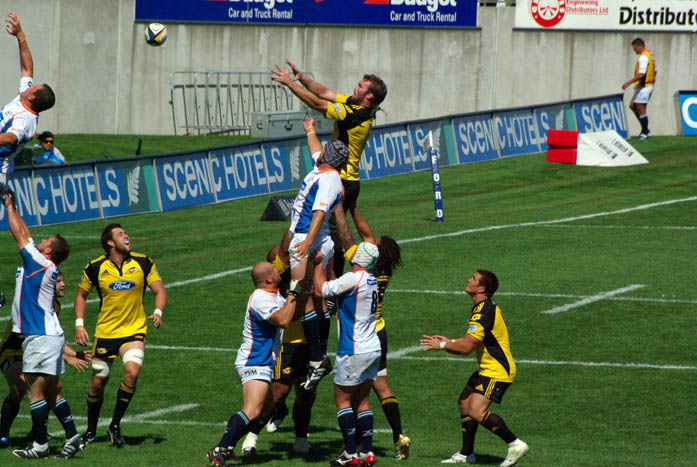
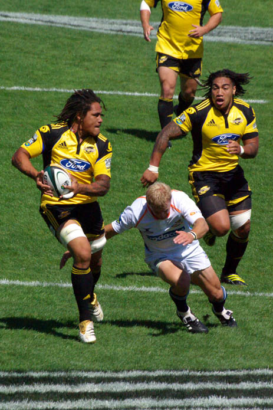
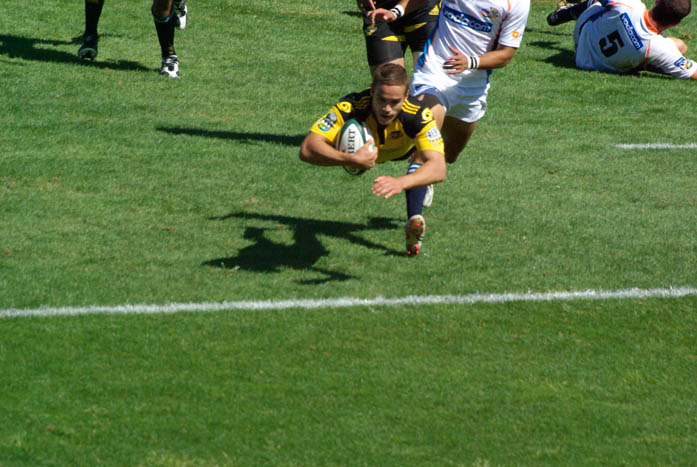
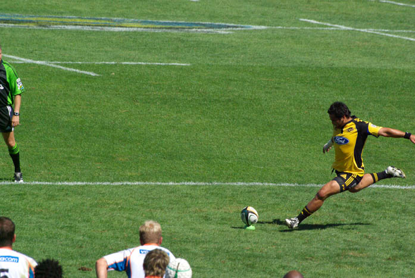
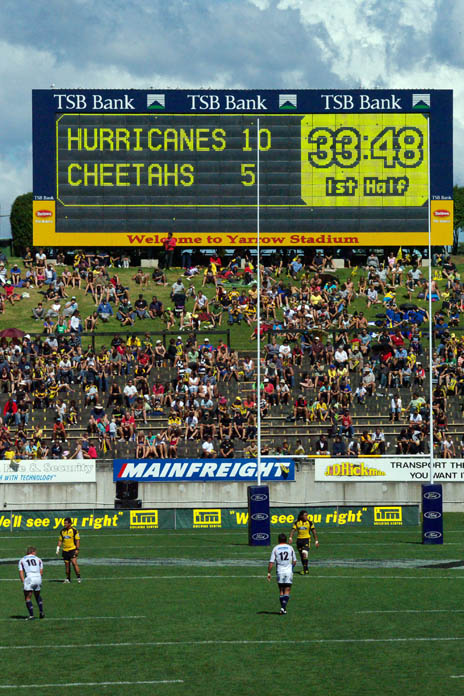

New Zealanders love our sport, with lots of amateur sport being played most evenings and weekends, country wide. In the last 30 years many sports have gained in popularity, with Soccer (Football), Field Hockey, Speedway, Squash, Running and Basketball all rising in participation numbers. We also manage to field competitive teams at the Olympics, both Summer and Winter.
But four are either embedded in our cultural psyche, or when they roll into town will gather a crowd that can make towns come to a stop: Rugby Union, Netball, Cricket and motor racing (Supercars).
Being a former colony of England and the British Isles, three of New Zealand's top four sports can trace their origins back to the UK.
If you are unfamiliar with these sports, here is a brief summary of each. Please note all of these sports have their own words and terms — almost their own language — and quirks. With most of them, just by watching you will get the general idea of the game. Cricket, however, can be a little more challenging if you have never seen it before.
Sport One
Rugby Union & Rugby League





Rugby Union is the development of the game that originates from Rugby in England. The original version of the game is closer to Rugby League. American Football (Gridiron) also has its origins in the original Rugby.
New Zealand has prided itself on being a world player in both codes of Rugby.
Rugby Union is played between two teams of 15 players each. The ball can be kicked forward but only passed back — it can't leave the hands forward of the passing player.
Rugby Union runs in a continuous play fashion, where play is only stopped for injury or penalties.
Rugby League is similar but is played with teams of 13 on the field. Play pauses when a ball carrier is tackled and resets at the tackle. Each team can only be tackled six times or they must score or hand the ball to the opposition. Play restarts with the ball being passed back by the foot to a team mate, similar to gridiron.
The objective of both codes is to score 'tries'. A try is achieved when the ball is carried over and then placed on the ground behind the opposition's try (goal) line.
After scoring a try, more points can be gained by a conversion — a conversion is when the ball is kicked through the goal uprights and over the goal's horizontal bar.
Penalties or infringements happen in all sports. Depending on how easy it is for the team awarded the infringement, they may choose to attempt to kick the ball just like a conversion over the goal, earning points if successful.
Where To Watch
During the winter months there will be many local Rugby Union fixtures throughout the country — most will be small club games that could be fun to watch. The big spectacle events are Super Rugby and international fixtures. Super Rugby is a competition between professional teams based in major cities across NZ, Australia, South Africa, Argentina and the Pacific Islands. The five NZ Super Rugby teams are the Auckland Blues, Waikato Chiefs, Wellington Hurricanes, Canterbury Crusaders and the Otago Highlanders.
Outside the Rugby World Cup, the big international games are the first two games played annually between the New Zealand All Blacks and Australia's Wallabies. These two games are played for the Bledisloe Cup. The cup has been played for since 1931 — the holder has to lose both games to lose the cup, otherwise a draw or two wins means they retain it.
Just like its cousin, you will find many local games of Rugby League on most winter weekends. The split between the two codes happened back in the early days of the game in England, when the more affluent players wanted to move the games to a Saturday. The working class regions of the English midlands and northern England only had Sunday off work, so they played their league on the Sunday. Over time the two codes formed different rules and styles of play.
Rugby League, understanding the need to pay players if they wanted them to have training time, allowed professionalism early in the sport's history. As such, Australia has had a professional tournament in operation since 1908. Rugby Union went professional in 1995.
The current format of Australia's professional Rugby League tournament (NRL) has a New Zealand team, the New Zealand Warriors. While their home fixtures do move around New Zealand, most of their games are held at Mt Smart Stadium in Auckland.
Sport Two
Netball
Once boasting the highest participation of any sport in Australasia, for many years growing up in New Zealand it was expected boys play rugby and girls play netball.
Since the mid/late 1990s all of the major codes have suffered a decline in participation, in part due to other codes gaining in popularity, or children becoming more interested in technology.
Netball at local level, and traditionally, was played outside on a concrete or asphalt court between two teams of seven players each. The objective is to score points by throwing (shooting) the ball through the opposition's hoop and net, like basketball — but unlike basketball, there is no backboard. Goals can only be scored inside the semicircle that surrounds the goal.
Each player has strict zones they can play in, related to their position. The ball holder cannot step with the ball, so can only pass it once they have caught it.
Due to the nature of the player and ball contact, Netball makes for a great game of positional play. The fast moving game is played over four quarters.
The League
New Zealand has its own professional league, the ANZ Premiership. Competing teams include the Northern Mystics, Northern Stars, Waikato Bay of Plenty Magic, Central Pulse, Mainland Tactix and the Southern Steel.
International games are always a spectacle. The NZ Silver Ferns are often among the top three ranked teams in the world.
Sport Three
Cricket
Cricket now has multiple variants of the core game. Unlike Rugby Union and Rugby League, the difference in the games hasn't led to a break in the sport's governing body locally.
The game was traditionally played in what is now called "Test" format. These tests run over multiple days — the longest known is 12 days — though now Tests are capped at five days. Yes, after five days it is still possible to have a drawn result!
The game is played on a large oval field between two teams of 11 players. One team will bat (hit the ball), the other will bowl (throw) the ball to the batter. The batting team will have two players on the field, while the fielding team will have all 11 on the field. The fielding team is trying to get 10 of the 11 batters 'out' — either by catching the ball off the bat, or by the ball striking the stumps and dislodging the bails (three vertical sticks with two small sticks on top) when the batter is not 'safe'. Each team moves from fielding to batting and vice versa once the batting team can no longer field a pair of batsmen, meaning 10 have got out.
The batting team is trying to score runs (points) either by running between the two sets of stumps — each crossover of the batting players the full length between the stumps equals one run — or by hitting the ball to the field boundary. If the ball bounces before reaching the boundary, the team is awarded four runs, simply known as "a four". If the ball doesn't bounce before crossing the boundary, the team is awarded six runs, known as "a six".
Each fielding team will have one player at a time deliver the ball to the batsman — each delivery is known as 'bowling' the ball. The ball is bowled by each bowler six times; this group of deliveries is known as an over. On completion of each over, the next bowler will deliver the ball six times from the opposite end of the wicket. The wicket is the strip of grass that has a set of stumps at each end, which the batsmen run along to score runs.
To add to the confusion for someone who has never seen the game — in test format, both teams wear white uniforms.
The sport of Cricket can become so slow that once, at an English test match, the TV commentator started talking about the public bus driving past the ground, as he had very little else to talk about.
Due to the length and slow speed of the game, in the 1980s the sport looked to increase its popularity, so a shorter version of the game was brought in.
The One Day games ("One Dayer") are limited by how many times the fielding team can deliver the ball to the batter. The One Dayer is limited to 40 overs per team, with one turn each at fielding and batting. Each team can only bat once, and the players wear coloured uniforms.
The Beige Brigade
New Zealand's international team is the Black Caps, and their uniforms are black. When the One Dayers started, the team wore a brown and beige uniform — you will still see reference to this era, with some fans wearing the uniform, usually referenced as the Beige Brigade.
In the 1990s, in an attempt to regain fans, an even shorter and faster version of the game was created. 20/20 is exactly what its name suggests — it's half of a One Dayer. It delivered what its creators hoped: big hits and a fast paced game, as teams try to score big, fast.
International One Dayers and 20/20 matches can draw big crowds and can be a real spectacle.
Sport Four
Motor Racing — Supercars
Supercars is a Trans-Tasman touring car racing championship that, until 2017, was a battle of locally manufactured cars.
For many European motorsport fans, touring cars is a conventional form of motorsport where purpose-built versions of road-going cars are raced on a motorsport circuit. New Zealand has had its own local version of touring car championships for as long as people have raced cars in NZ — a long time — but the pinnacle of the sport for Kiwis is the Australian competition.
Bathurst 1000
The highlight for most touring car fans is the Australian Bathurst 1000 — raced until the winner has travelled 1000km on the Mount Panorama circuit, lapping 161 times and taking roughly seven hours to complete.
While the Australian Touring Car championship is the pride of Australian motorsport, many Kiwis have stood on the top podium more than once. Denny Hulme, Chris Amon, Paul Radisich, Greg Murphy, Shane van Gisbergen and Scott McLaughlin are just some of the names that loudly stamp our flag on their cars in the championship.
For many years, Holden Commodores, Holden Toranas, Ford Falcons and Ford Sierras built the foundations of a strong local fan base. In 2017, Ford and GM Holden closed their Australian manufacturing plants in favour of importing assembled right-hand-drive (mainly American) international options.
Historically, New Zealand has had an on-again/off-again relationship hosting the touring cars — Wellington City, Hamilton City and Auckland's Pukekohe Circuit have all hosted the event.
The current brand of the touring car championship is the Supercars Championship. Taupō Motorsport Park and Christchurch's Ruapuna Speedway currently host the NZ legs of the championship. Legions of motorsport fans descend on these towns and help make the event the highlight of the local motorsport calendar.